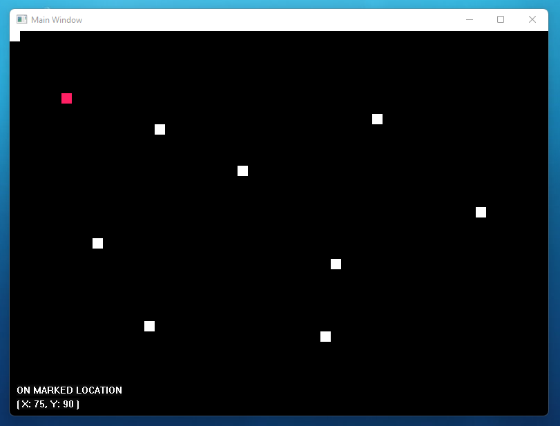

The Blok Experiement
Languages: CTools: Visual Studio Code • GCC
Frameworks/APIs: WIN32 API
Platform: Desktop • Windows NT Only
A brief description
A project to explore how native Windows applications are created using the WIN32 API.

When launching the application, a black painted window is created with a pink block at the top left corner.
Towards the bottom left, there is text showing the X and Y coordinates of the pink square; in addition to whether the block is in a marked location.
The pink block's location can be changed or manipulated through the use of arrow keys from the keyboard, also updating the coordinates at the bottom.
The mouse pointer can be used to mark points on the grid; this is indicated by a white block. It can be unmarked by clicking in the same area.
Code documentation
The application uses structures to organise the code into modular components. These involve:
Application, Block, Grid, Window